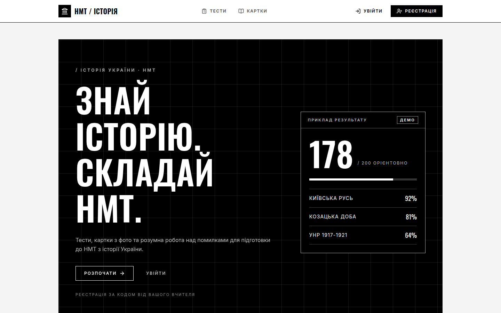
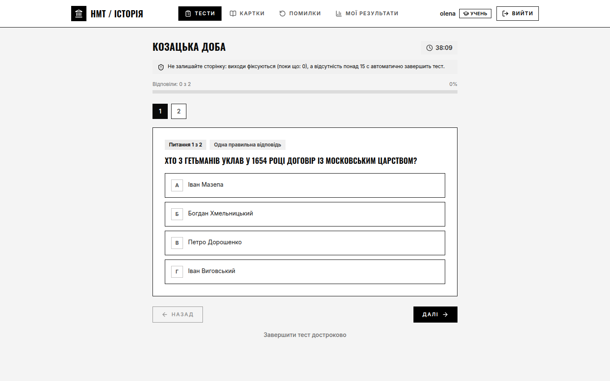
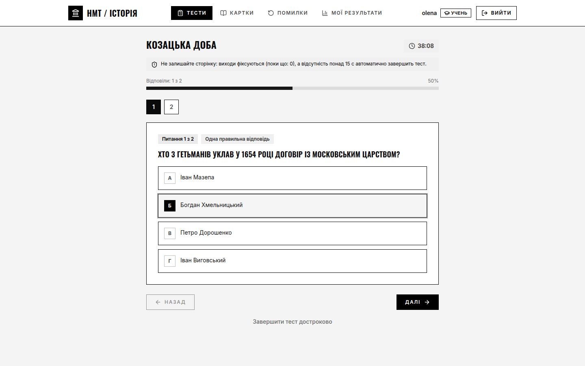
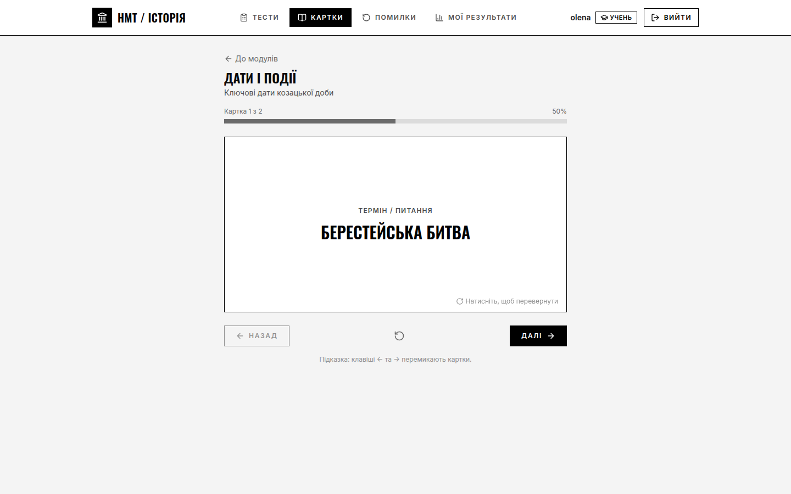
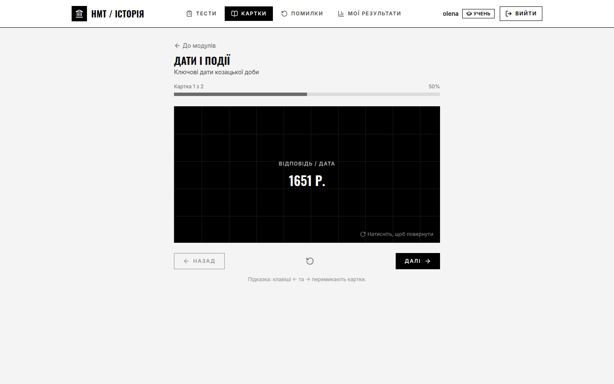

Тести, картки з фото й робота над помилками.

І детальний розбір кожної відповіді.


Дати, терміни й карти для запам’ятовування.


Сайт сам повертає питання, де ви помилилися, поки відповідь не стане правильною.